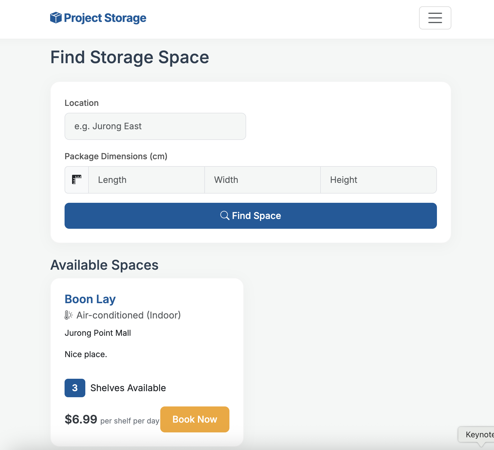
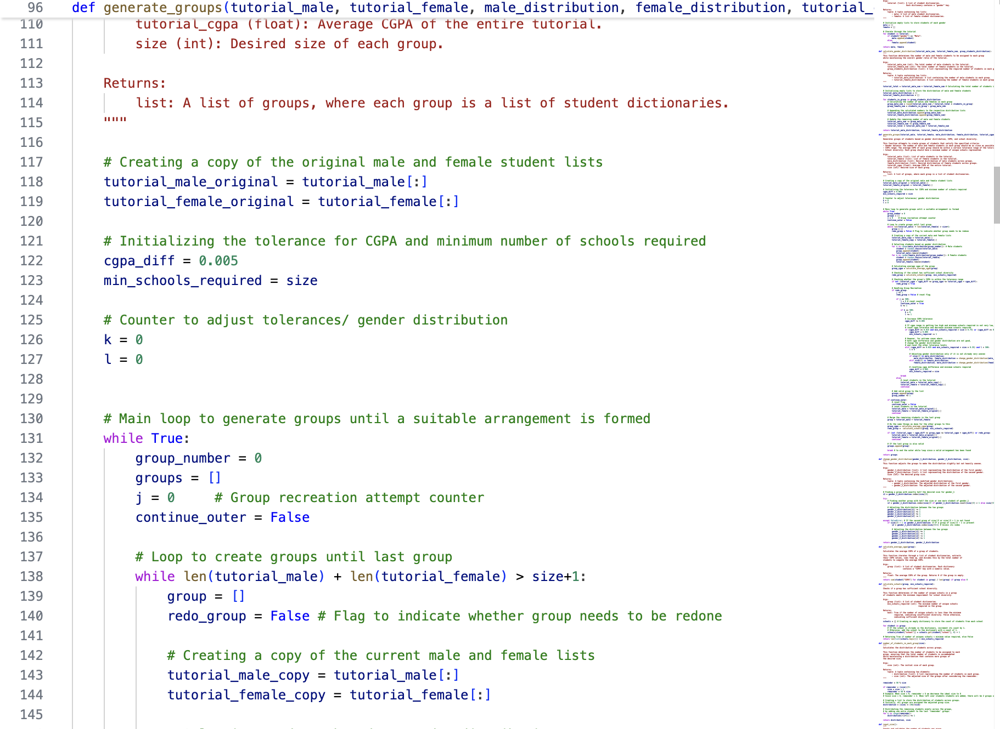

Aaron Davis
About
Building systems that scale, not just those that work.

Backend Engineer & Systems Architect
Diligent. Determined. Disciplined. This is the standard that drives my journey.
Challenges that push me beyond my limits. That’s what I seek. Whether it’s restructuring entire codebases for clarity and scalability or creating my own databases when SQL wasn’t allowed, I enjoy the struggle. Because that’s when the most meaningful decisions are made.
Beyond code, I serve as a Student Ambassador at NTU CCDS, translating technical complexity into clear narratives for prospective students, ensuring that I can connect with people just as effectively as I connect APIs.
Seeking Software Engineering Summer Internships · 2027
Experience & Education
My journey
- Led consultations with a total of 50+ prospective students at major university fairs and NTU Open House 2026 (10K+ attendees), providing tailored academic guidance on degree options and career pathways.
- Communicated technical program details to diverse audiences through one-on-one and group formats, demystifying computing curricula and addressing misconceptions about prerequisites.
- Selected as 1 of 71 participants through a competitive application process for an intensive leadership development programme designed by NTU in partnership with 6 industry leaders.
- Collaborated in cross-functional teams to design a decarbonisation-focused solution for A*STAR's Institute of Sustainability for Chemical & Energy sector.
- Mentored by Mr. Iskandar Shahril (Senior Assistant Director, A*STAR ISCE2 Strategy Division).
- Software Engineering — Object-Oriented Design & Programming (SC2002); Software Engineering (SC2006); Introduction to Databases (SC2207)
- Artificial Intelligence — Data Science (SC3021); Artificial Intelligence (SC3000)
- Algorithms & Logic — Data Structures & Algorithms (SC1007); Algorithm Design & Analysis (SC2001); Automata, Computability & Complexity (SC2203)
Skills
My toolkit
Projects
Solving real-world challenges




Achievements
Competitive milestones and formal recognition